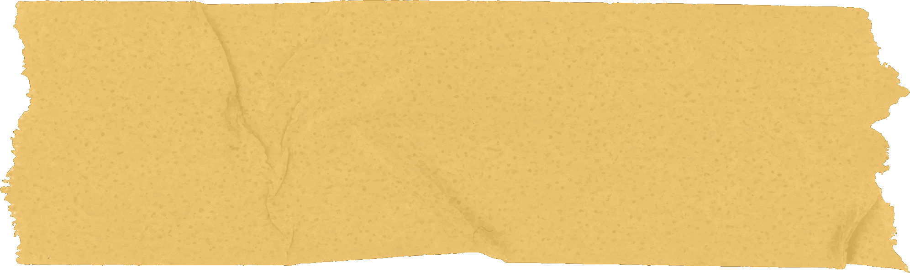
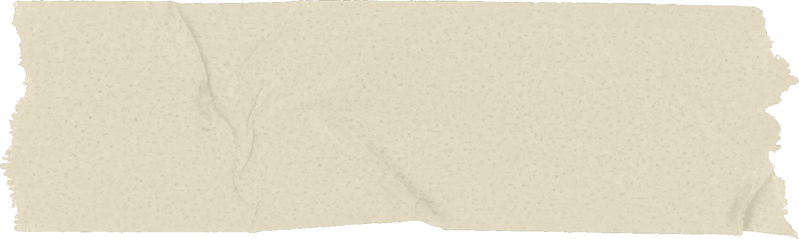
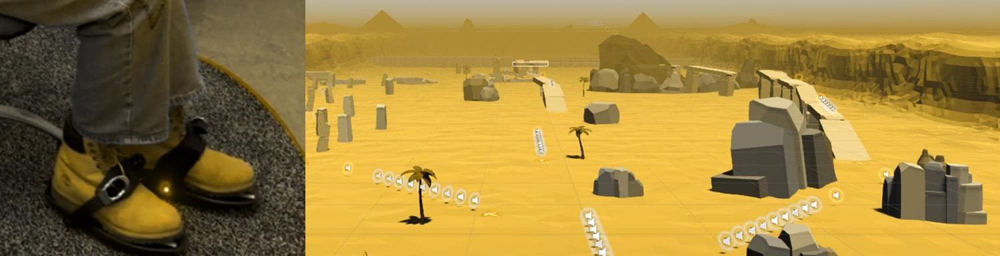
Cybershoes are a foot-based consumer input device that enables seated walking-in-place locomotion in VR, set against the handheld controllers most players use today.
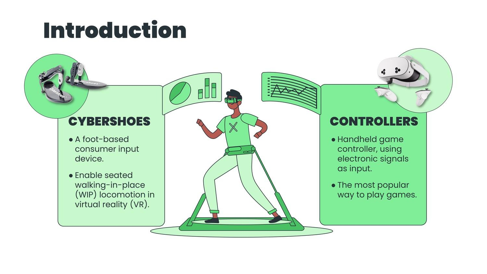
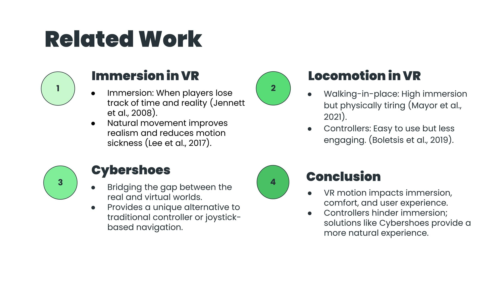
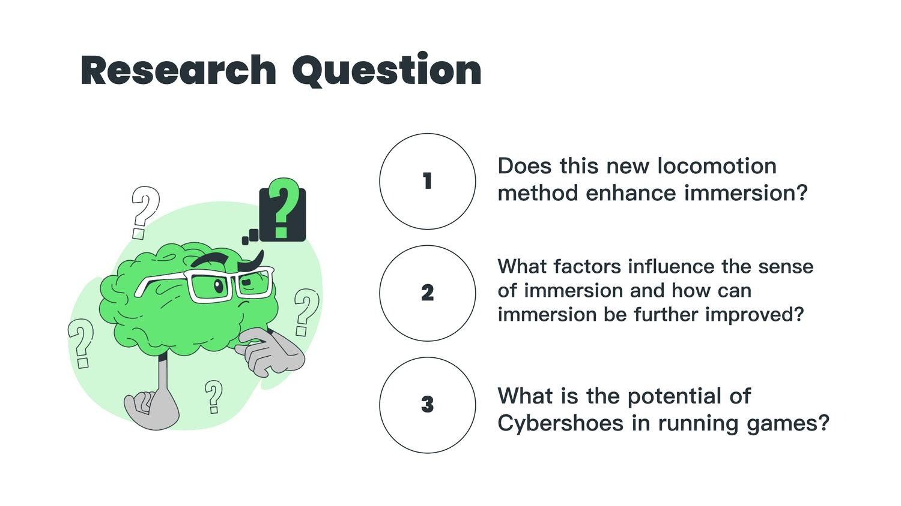
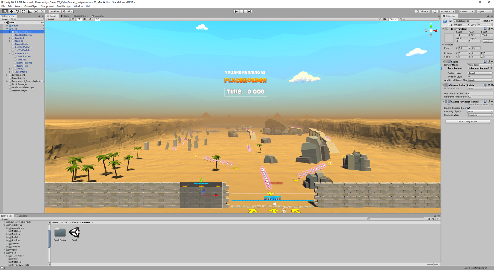
Fourteen participants played the same running level twice — once with Cybershoes, once with hand controllers — followed by two questionnaires and an interview.
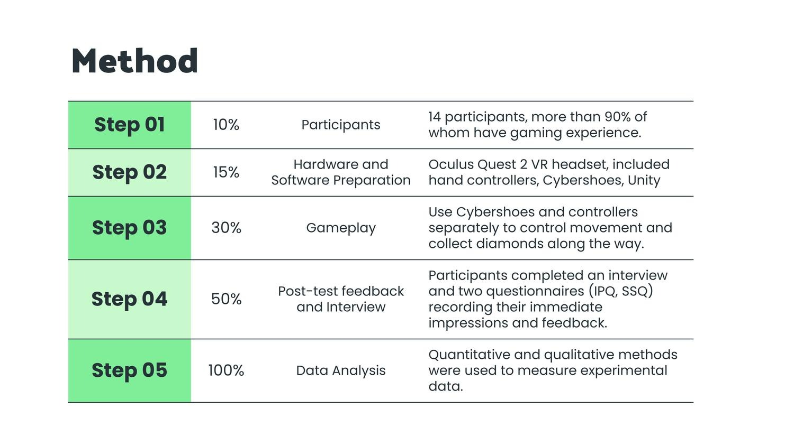
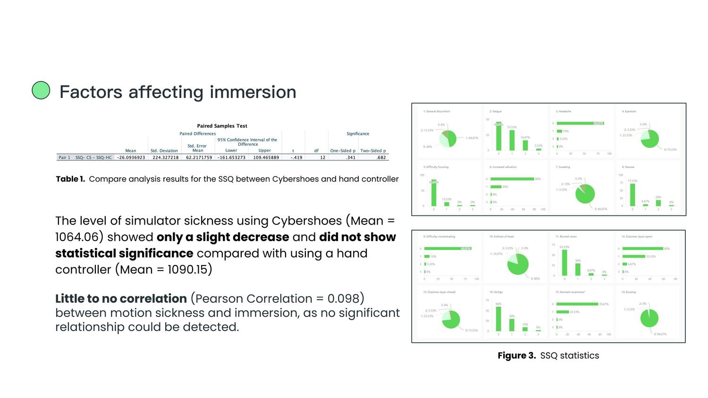
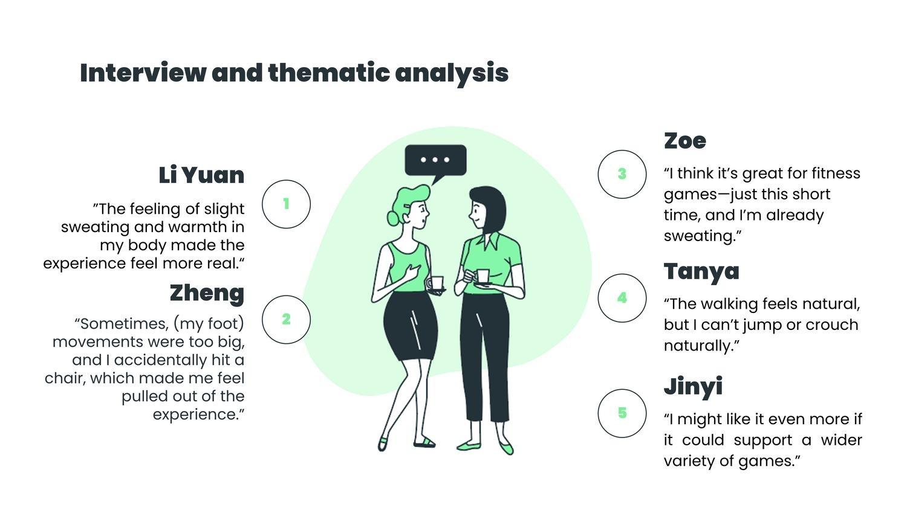
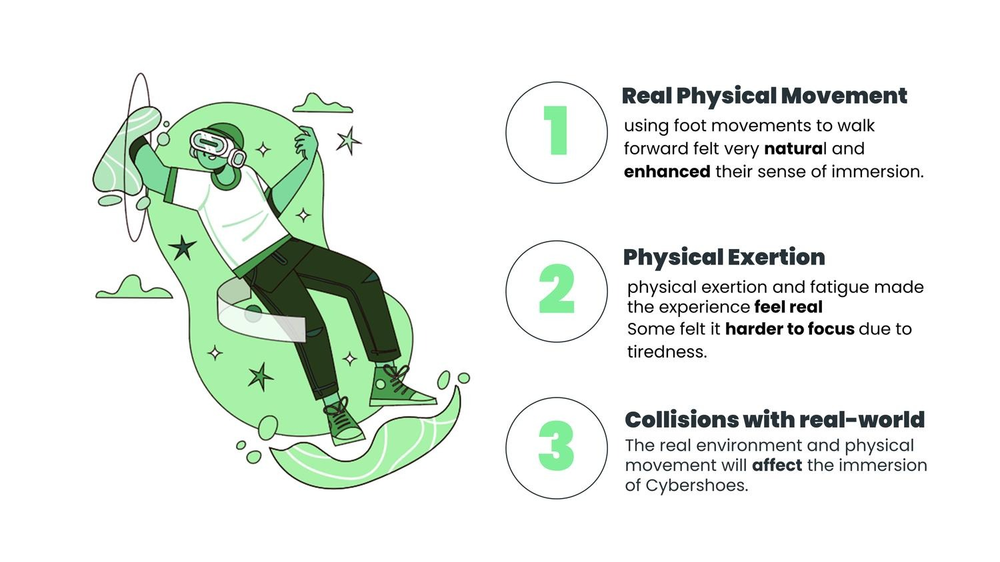
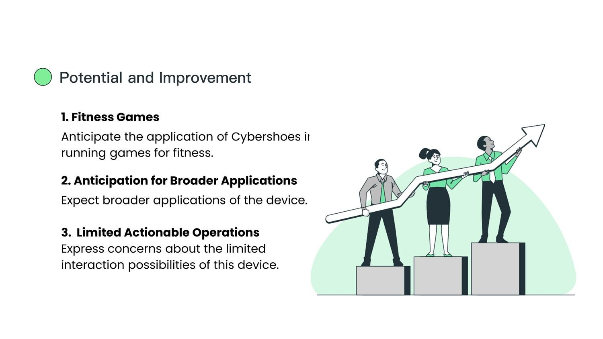
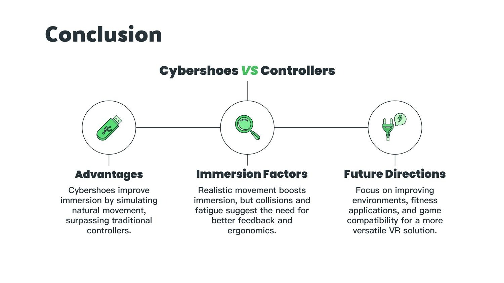
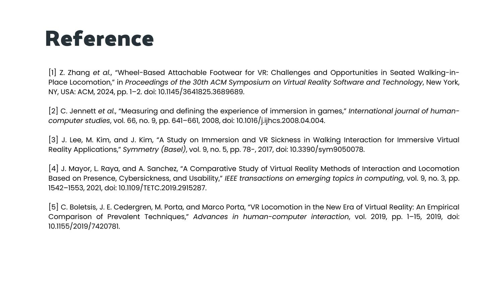